Intuit Mailchimp · Onboarding
Experiment data showed that the homepage setup tasks were not driving engagement. I moved over to the homepage space temporarily to help address this issue. What I quickly discovered was that the business had no clear pattern for helping users beyond initial setup. What started as a project to improve new-user setup became an effort to define a global guidance system that could surface relevant next steps anywhere in Mailchimp, at any point in a user’s journey.
The reframe that changed the scope of the project
New users were dropping off on critical setup actions on the homepage such as domain authentication, list imports, and integrations connections.
These setup tasks directly predict whether a user will send their first email. And "first send" is the strongest signal for retention and paid conversion.
The original brief was focused on a specific surface, a small setup carousel on the homepage. The reframe I brought to the team was that this isn't just a new-user problem. Users at any stage of their Mailchimp journey can fall behind on setup tasks that directly predict whether they'll send their first email, convert to paid, or get enough value to stay. What we needed wasn't a better carousel. It was a scalable guidance system. Persistent, contextual, and accessible to any user, at any point.
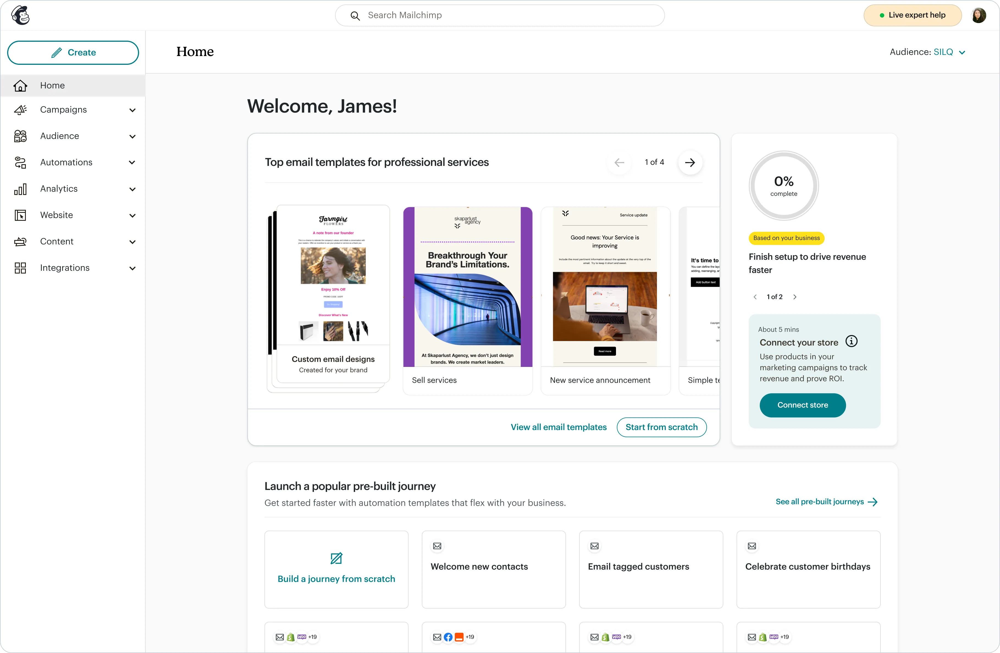
Competitive research, user segments, and cross-team alignment
I started with a competitive analysis across onboarding patterns in SaaS and marketing platforms to understand how other products handled guidance and task discoverability. Because I already owned the account setup space, I could draw on existing knowledge about user segments and business verticals, what data we collected, and which tasks users consistently missed or had low awareness of. That existing context let me move faster and make stronger recommendations than starting from scratch would have allowed.
The cross-team design challenge was equally important. The tasklist needed to surface actions owned by product teams across the platform, not just in setup. To solve this, I created a shared working space where designers from other parts of the product could contribute the actions users needed to take in their areas but that weren't being surfaced anywhere. I also collaborated with Intuit's QuickBooks onboarding team to learn from their approach to personalization and understand how cross-product signals could strengthen task relevance from day one.
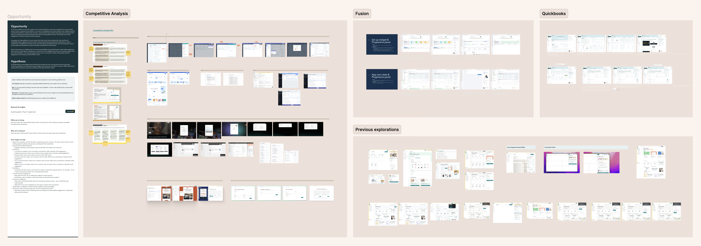
Four principles that guided the system design
Build reusable patterns, not one-off widgets. Create a framework that grows with the product.
Use account data to show relevant tasks. Different businesses need different guidance.
Protect what works. Let metrics guide changes, not assumptions.
Drive 1-3 critical setup completions per user in their first 30 days, boosting retention and long-term success.
Before designing anything, I mapped the six business verticals that Mailchimp was using at the time to determine personalization — from e-commerce to civic services, ensuring the tasklist could support users across all major customer segments.
Use case 1
E-commerce
Use case 2
Professional services
Use case 3
Physical Retail
Use case 4
Consumer services
Use case 5
Civic or social services
Use case 6
Media, content or software
Placement had downstream implications for discoverability, trust, and how users would relate to the feature long-term — not just at first launch.
Option A
Top nav
An icon next to the global Help button. Tasklist appears on click. Visible from anywhere in the product, but competes with other global nav elements for attention.
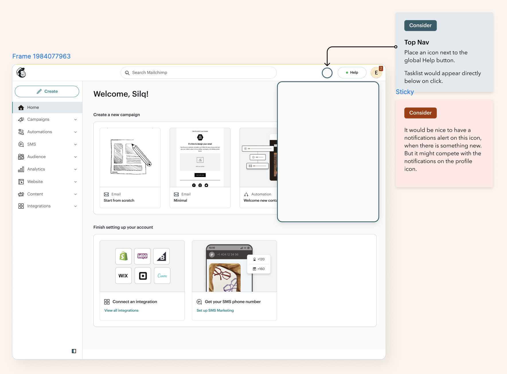
Option B
Left nav
Positioned directly above the Create/global navigation. Always accessible by one click. Allows the user to have the menu open without having to disrupt their current workflow.
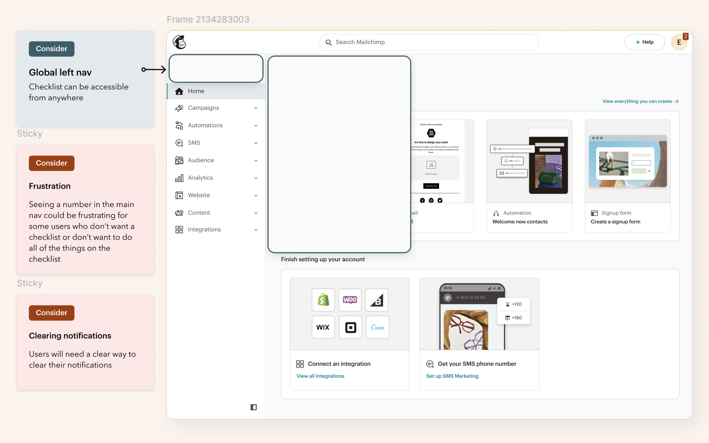
Option C
Homepage module
A persistent module on the homepage. High visibility for first visits, but not globally accessible. Some may also find a pinned checklist frustrating if they don't intend to complete everything.
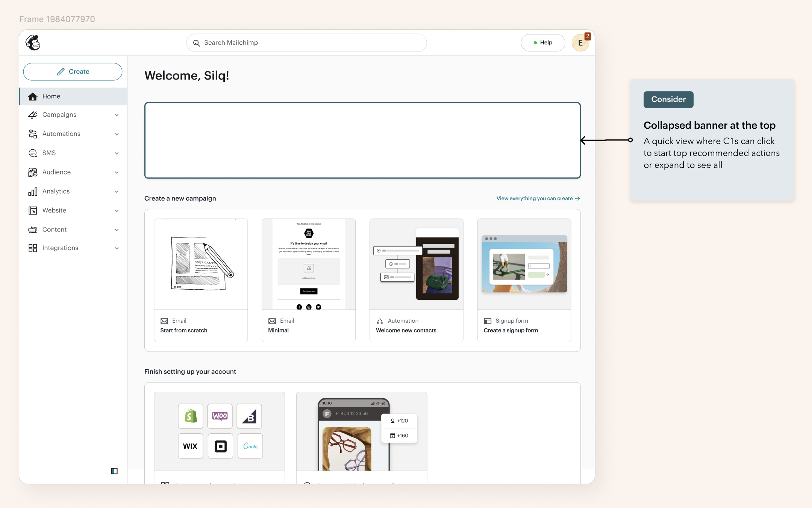
Option D
Right rail
A full length sidebar on the right side of the screen. Users may or may not engage - would need compelling copy to encourage usage.
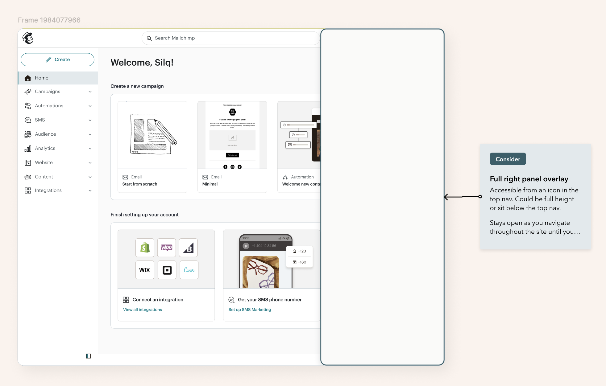
I considered both "fun" branded names and direct, to-the-point options. Something that would be clear but also memorable.
Branded names
Evoke the product's personality — but may feel abstract or imply AI capability the feature doesn't yet have.
Direct, to-the-point
Immediately communicates function — lower learning curve, but may undersell the strategic value of the feature.
I explored several approaches for task cards - various text options, an optional image, and clear primary/secondary actions. Some quick actions can be done inline; deeper flows should navigate into the product. Completion could be shown with a checkbox or circle, and small badges can signal category or urgency.
Title of task
"Here's why we're showing you this"
Optional description
Completion indicator
Checkbox or radio
Context message
Tells users why we recommend this for their business
Optional badge
Icon or label for context or urgency
Feature area + CTAs
Optional image, plus up to 2 actions
Placement approaches, component formats, and tradeoffs.
I explored several placement approaches, a homepage module, icon in the top-nav, left sidebar entry, or right-rail overlay, evaluating each against discoverability, expected user behavior, and engineering feasibility. I also compared horizontal card formats (more visual, easy to scan) with vertical list formats (ability to have more dense content) to see which options would work best for different scenarios.
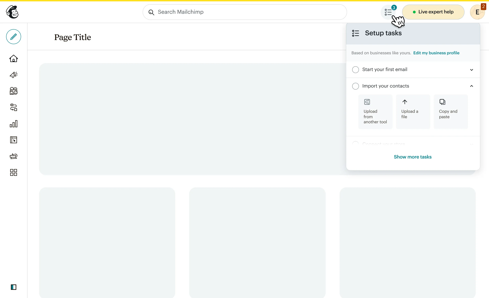
Top nav
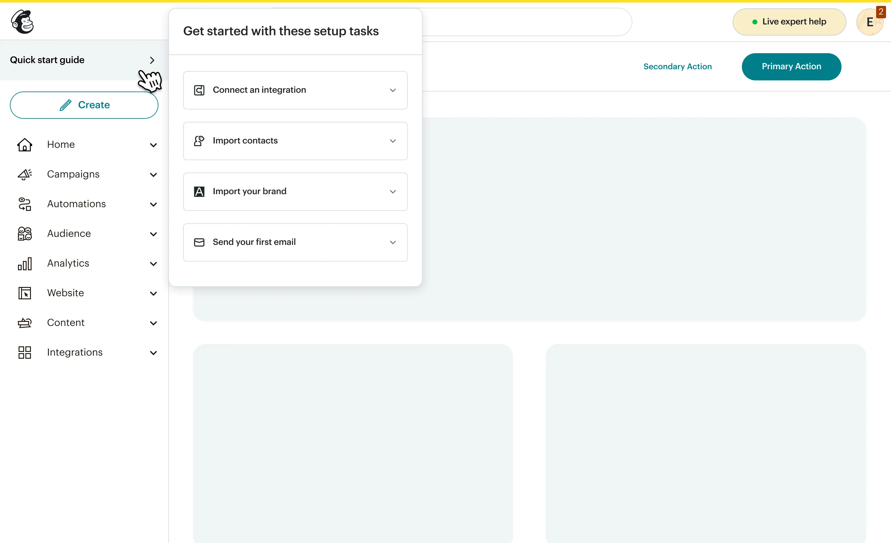
Left sidebar
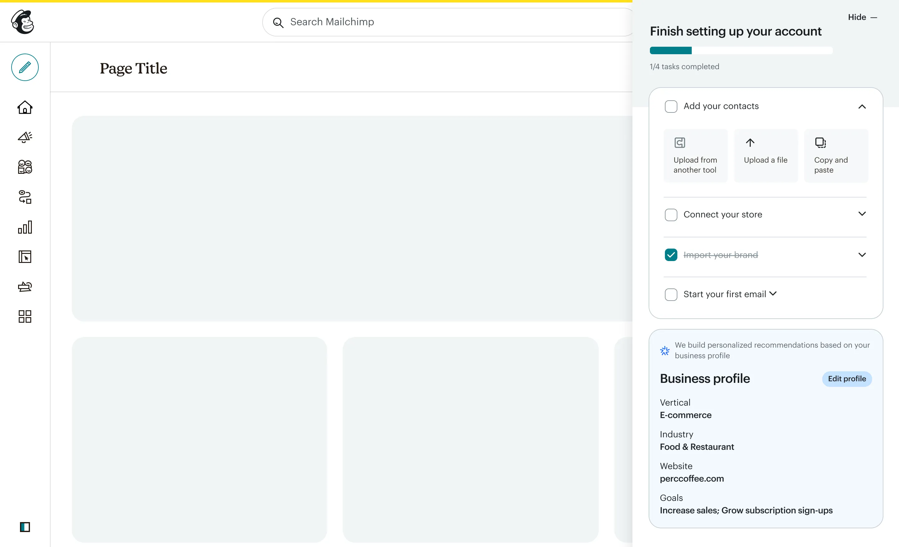
Right rail
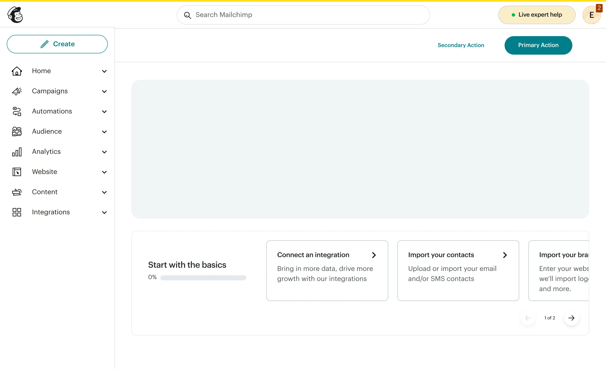
Homepage "card" format with horizontal layout
What testing revealed about attention and intent
I ran multiple usability tests on 4 of the top design options (narrowed down through regular syncs with my PM and Growth design team members), asking users to "tell us what they would do first" and not hinting at what we were testing. The tests surfaced a critical insight - users consistently expected the tasklist to be clearly visible and not buried or hidden behind an icon.
Testing also revealed that completion messaging mattered more than we expected. Users who saw a progress indicator were measurably more likely to return and complete a second task within the same session. That finding directly shaped the MVP's visual design.
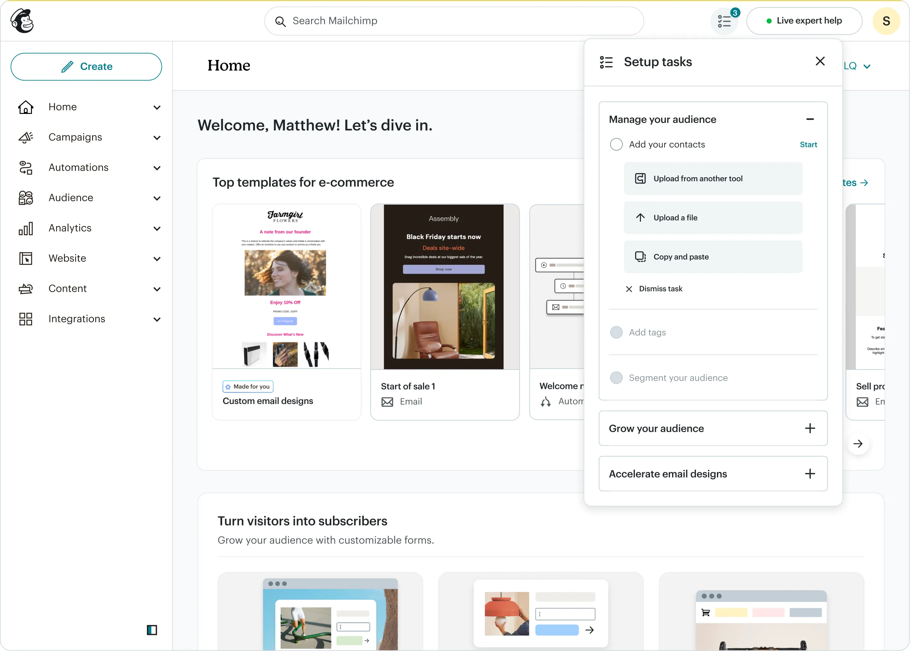
Users had a hard time finding this option from the icon in the top nav
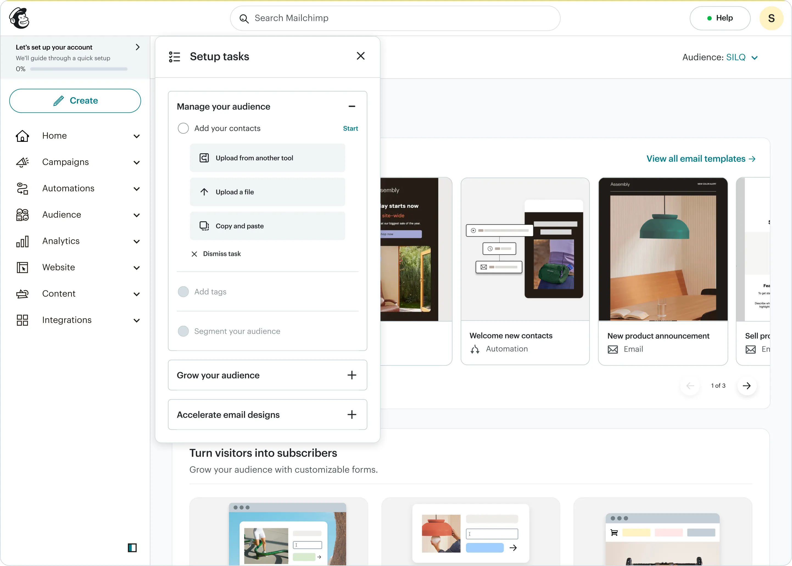
Users engaged more with this option vs. the top nav option, but didn't like that it still felt hidden
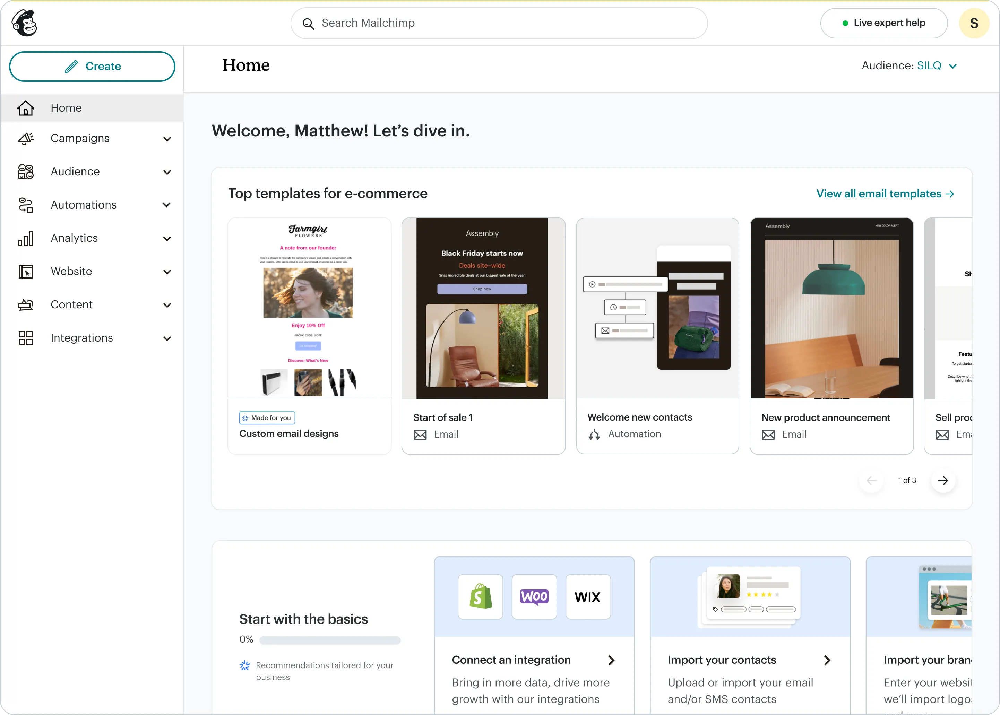
This option, built into the homepage, was by far the version most users wanted to engage with. With the caveat that it shouldn't be this low on the page.
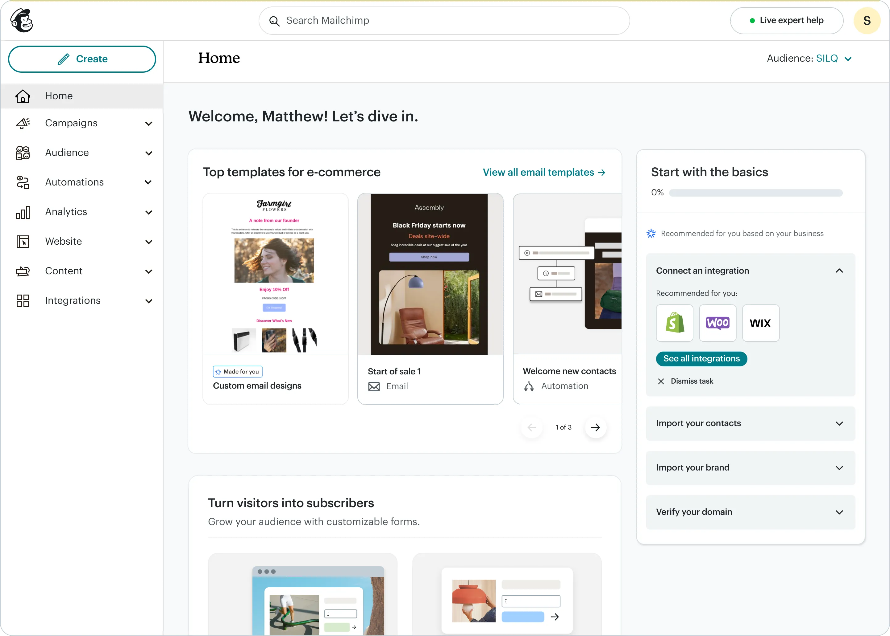
Users also liked this option but were more drawn to the card format.
Controlled experiment, held for 30 days post-launch
After user testing, I moved the tasklist to the top of the homepage to give it the prominence users were asking for. I explored ways to shorten the height to keep the high-performing creation actions (ex: "Top templates for e-commerce") above the fold.
The MVP targeted users in their first 30 days and surfaced the tasklist as a persistent module on the homepage dashboard. The tasklist contained 5-6 personalized tasks based on the user's industry and account data, with a progress indicator to encourage completion.
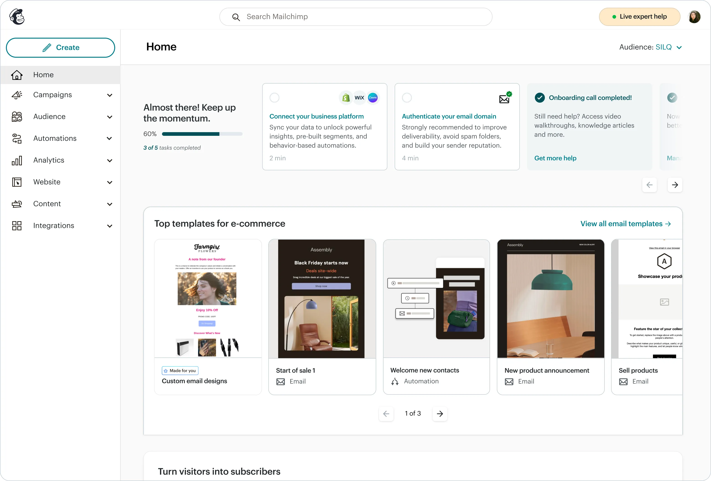
To enable this work, I collaborated with 6+ teams across Mailchimp to ensure alignment on validation, completion logic, appropriate tasks and consistency with copy. I built a flexible component library that would flex for other use cases.
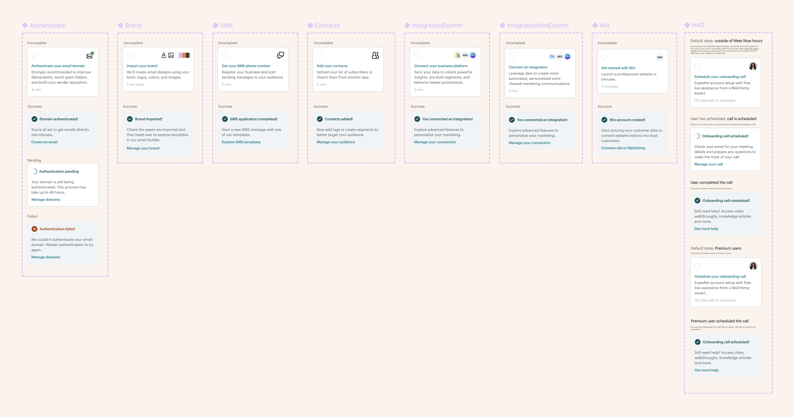
I provided concise specs for edge cases and future-proofing, making it easy for any team to plug into the system.
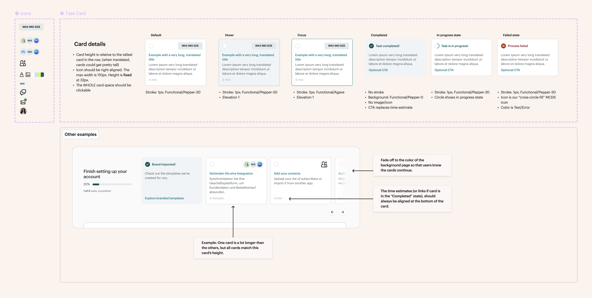
From setup to the full product lifecycle
Once the tasklist system proved its value in setup, the natural next step was extending it to Automations, where users faced a similar problem: high-value actions buried behind discovery friction. The content model we had built was already designed for this. Adding Automations guidance required no new infrastructure, only new tasks. That was the point. s
This expansion validated the core architectural decision: designing a shared content model across platform teams meant the system could grow without growing the design and engineering investment proportionally. Each new area the tasklist entered cost less than the one before it.
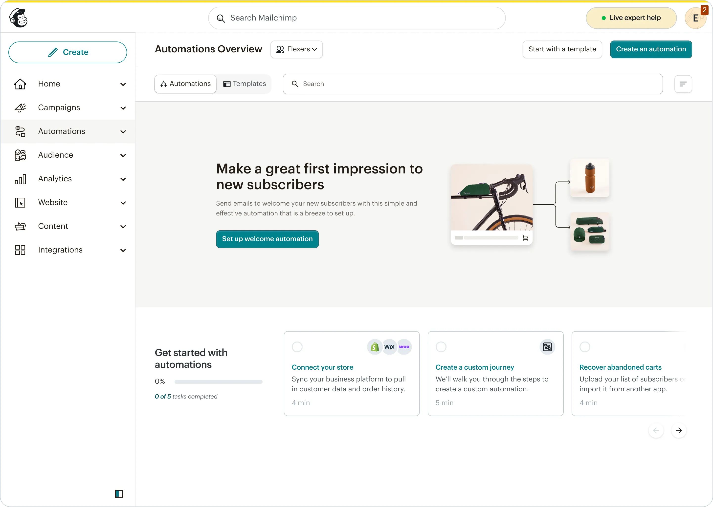
The tasklist didn't just scale to Automations. It established the pattern for how Mailchimp surfaces contextual guidance across the platform. Any team that wants to help users onboard now has a channel to do it, without building something new.
Evolving from a setup module into a persistent, AI-powered contextual assistant
My long-term vision was to evolve this from an in-page module into a global, persistent assistant that uses business profile data to surface the right task at the right time, anywhere in the product, not just during new onboarding. What excited me most was the ability for AI to surface highly personalized tasks based on the robust business profile data we had gathered about a business.
It could personalize recommendations using the user's business vertical, website/branding, the time of year, audience data, and more. Imagine that a veterinary practice in Spring could get flea and tick seasonal campaign prompts. A boutique with a lapsed audience gets a re-engagement workflow. The product stops being a tool users have to learn and starts being a partner that already understands their business.
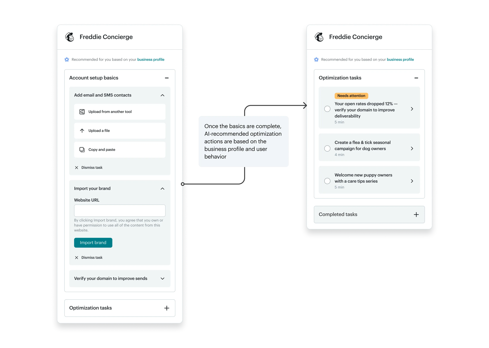
"The product stops being a tool users have to learn and starts being a partner that already understands their business."
The original brief was to improve a setup carousel. The most impactful thing I did on this project was expand the scope to build a scalable guidance system.
Coordinating across 6+ platform teams wasn't a process overhead — it was core to the design. The shared content model and flexible component library I built meant that when the system expanded to Automations, it required no new infrastructure. That architectural decision was also a design decision: the more extensible the system, the more users it could eventually reach without proportional cost.
By asking users "tell us what you'd do first" without hinting at what we were testing, we learned things a design review never would have caught. Users consistently wanted to see the setup tasks front and center, directly shaping the MVP's visual design in ways that contributed to engagement in the experiment.
The results — +38% domain authentication, +37% SMS adoption, +15% list imports — validated the MVP. But the more durable win was a system any product team could plug into without starting from scratch. Designing for that future was a bigger contribution than any single screen.